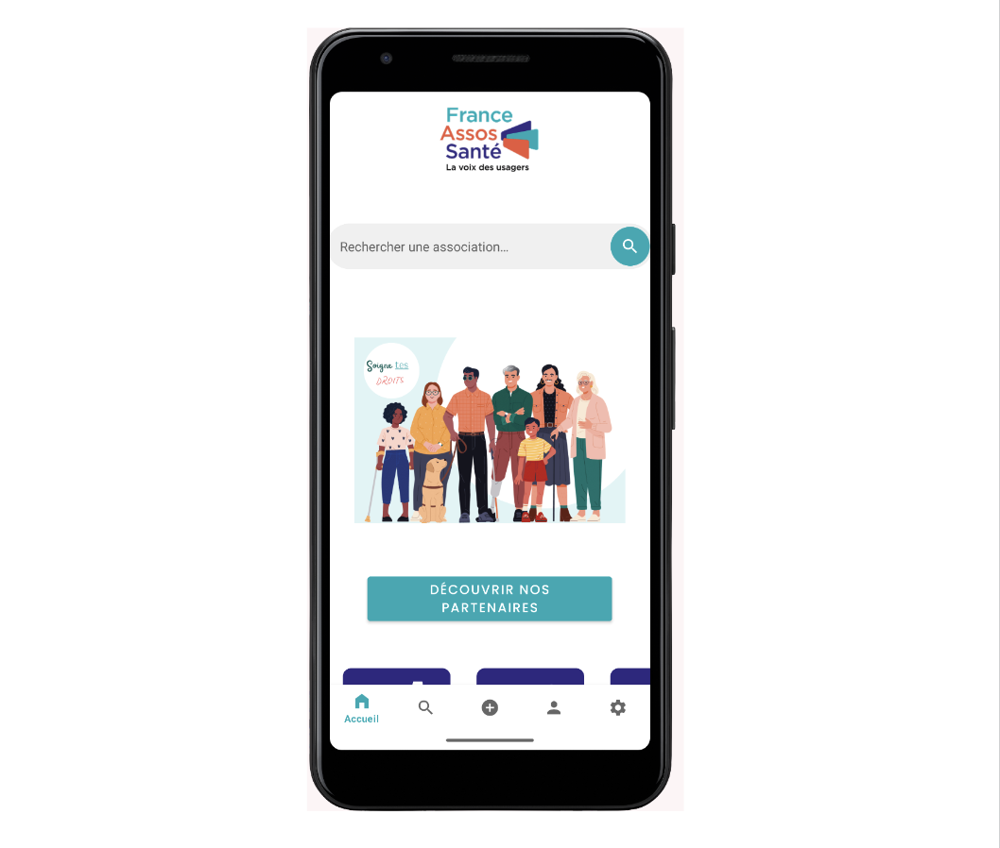
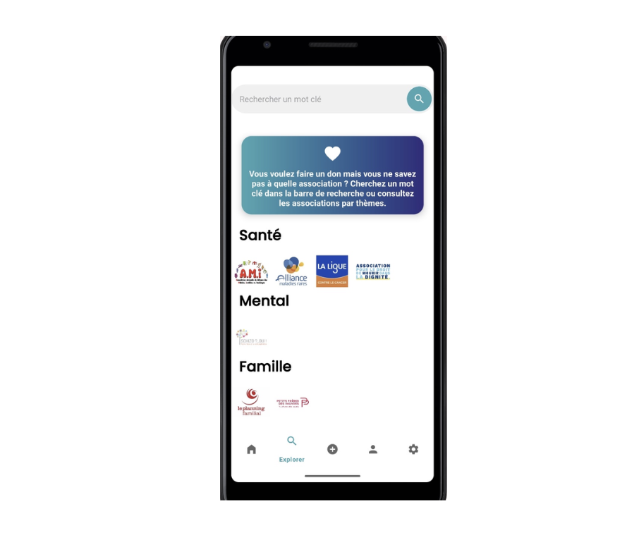
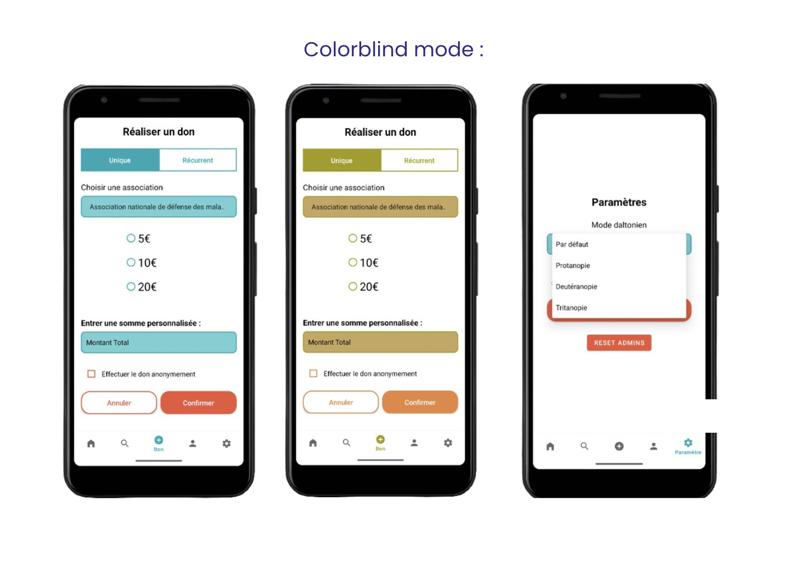
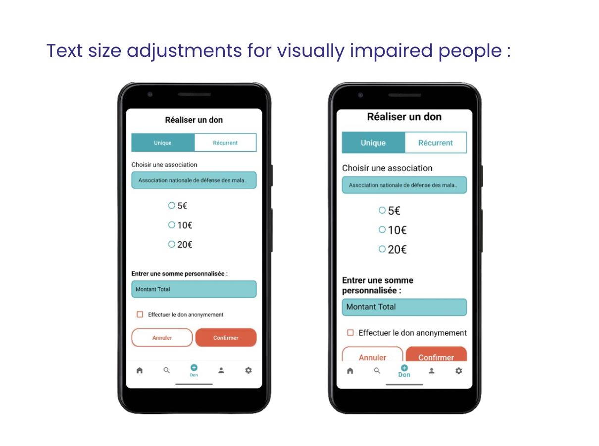
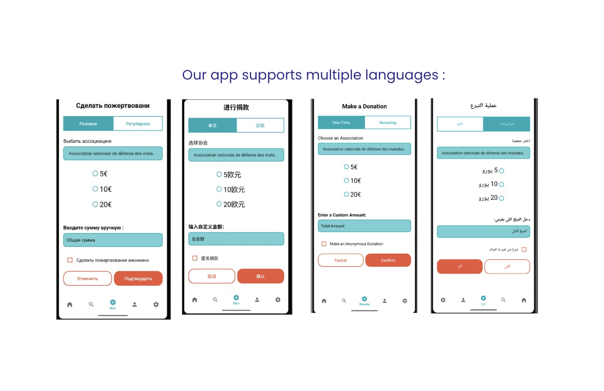
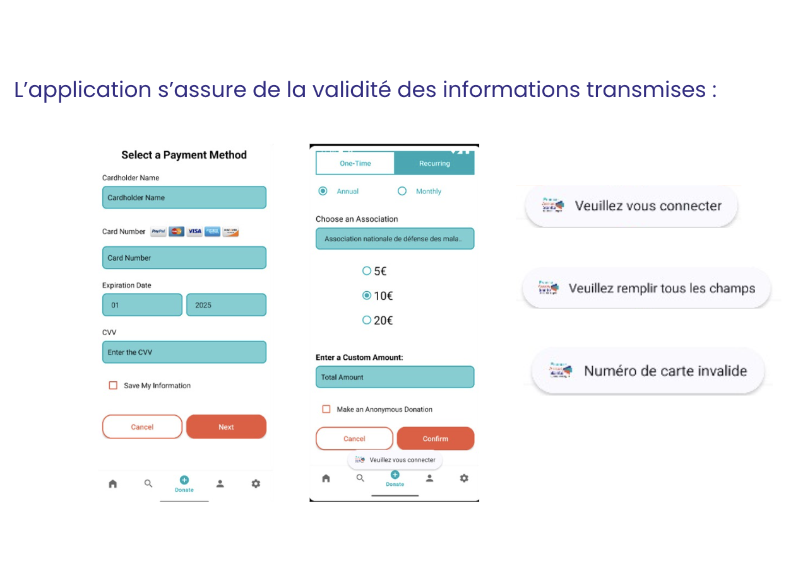
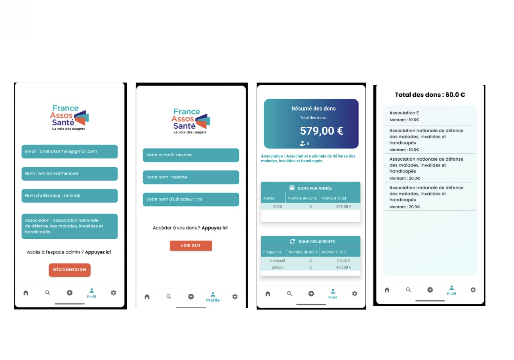
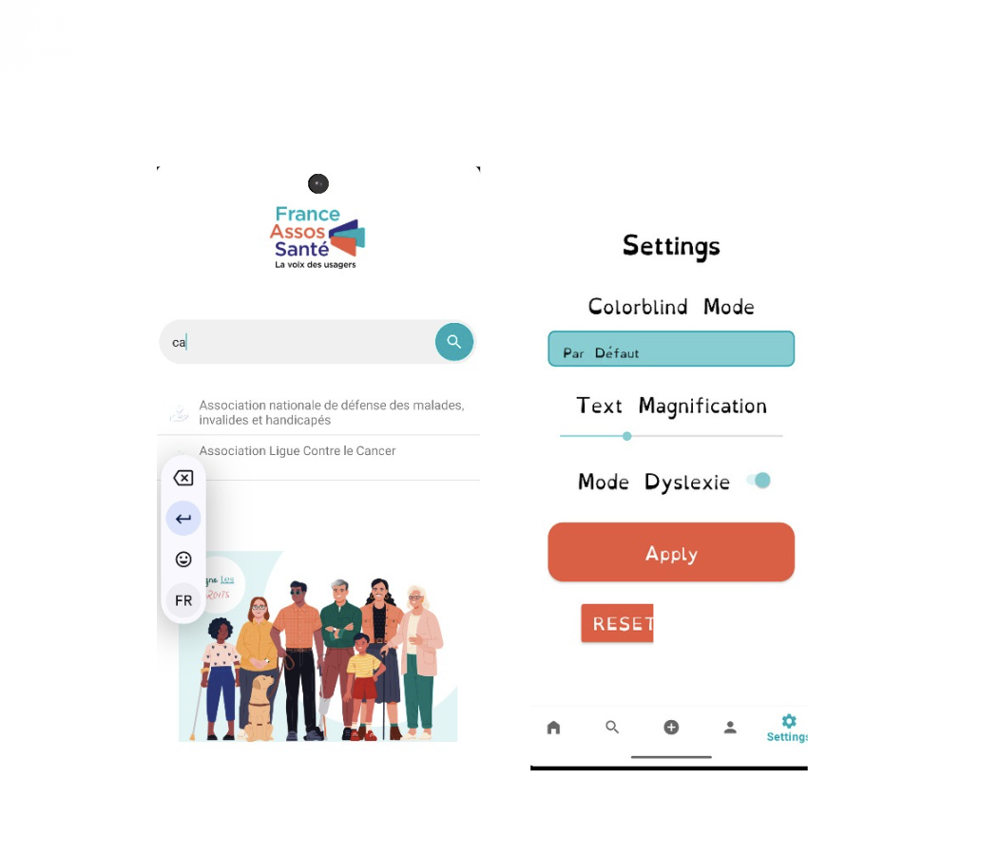

Development of an Android mobile application to facilitate donations to associations, with a clear and modern interface.
This university project was carried out as a team with a focus on security, accessibility, and user management (members and administrators).
Main features: one-time or recurring donations, account creation, secure login, admin dashboard with donation summary, association profiles, SQLite synchronisation, multilingual support (French, English, Russian, Chinese, Arabic).
Final grade: pending.
Technologies used: Java, Android Studio, SQLite, XML, GitHub.